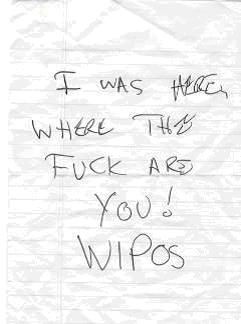
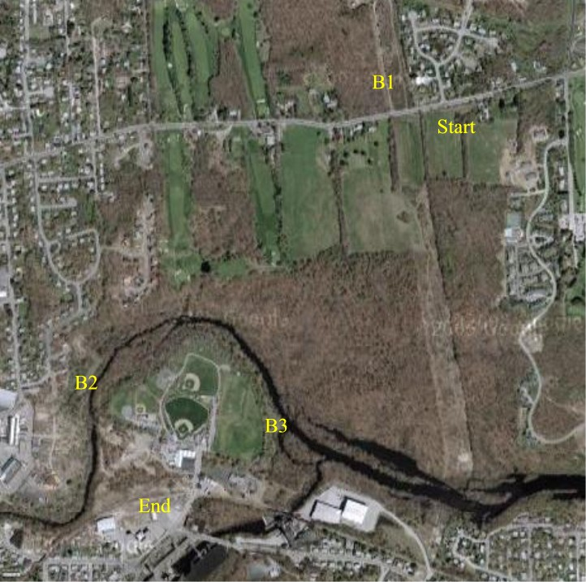

Beer-a-palooza Hash (First All-Flashlight Hash)
Run #1020, October 17, 2005
Hare: Dry Foot Fairy
Secret Co-Hare: Sparky the Hobosexual
Location: Wakefield Hill Elementary School, West Warwick
Weather: 50’s, Clear, Near Full-moon
Present: Basket Boom Boom, Tinker, Dr WHO, Oozing SD, SESYB, Dick Dock, Amish It Head, Fuwangi Boner, WIPOS.
The Run:
From the Hareline:
IMPORTANT: After setting trail today, the mystery co-hare and I marveled at the beauty and brilliance of what is sure to be hash of the decade. Nevertheless, and going against my better judgement (which is why I'm saying this), there are a few things you should know for this hash, especially the newer folks. Wear warm socks, like the triggered by water thermo-nuclear type. Also, if you've got gaiters (not gators), then wear them. Heck, if you've got gators, bring them too. Otherwise, prepare yourself for an experience you will never forget and rave about for years!
The hare set the scene for this trail with the above false advertising. Even with this carnival-like shill, reasonable numbers of experienced hashers made an appearance. But experience in a RIH3 hasher correlates inversely with their intelligence. The more you show up, the stupider you become. Just read the list and the proof is self-evident. Only Dick Doc had no excuse. But the hare promised an event to celebrate the birthdays of both Rita Hayworth AND Evel Kneivel. The thought of doing motorcycle jumps in a low-cut satin evening gown was too much temptation for her. If she only had known! And the hare had co-opted Sparky from Newport, as co-hare! Could things be worse?
The hash started promptly. In spite of himself, the hare had one brilliant innovation in mind. They left some glowering parents and dog-walkers at the school, and ran across the street. They turned north on the powerlines. They came to a BC! Fantastic! It was almost too good to be true! Less than a hundred yards, and a Beer Check! This could revolutionize hashing as we know it! He claimed it as a substitute for a prelube, but clearly, this is the wave of the future. Some thought that the beer choices were somewhat suspect. This is simply jealous carping. Beer was enjoyed. Several beers, for some. And to top it off, Fuwangi arrived late, and missed it altogether. WIPOS wasn’t even in West Warwick, yet. Wow!
True trail was reluctantly started. They crossed back and turned south on the powerlines, led by Oozing (who had only managed to drink one beer. Wimp!). All of a sudden Fuwangi burst through some poison ivy, like a sudden expulsion of pus from a giant, ripe boil on the buttocks. He caught up with Oozing as they continued straight down hill with checks only alternating between the three routes along the powerlines. There was occasional mud. But nothing else of note until a check led to a falsie straight. Oozing obliterated the false mark. He hid in the bushes. Ha, Ha! This fooled no one. At least for half an hour. That was when WIPOS had arrived, got lost, got disgusted with himself and went home for a beer. Ha, Ha! He left a note on the car of the hare:

His trailcraft is only equaled by his grammar!
Back up at the last check WHO and Dick Doc were on track and turned right. The trail briefly bushwhacked south on the west side of the powerlines, and then turned in. Again the hare, desperate to make the trail interesting, set checks. But almost all led straight. Only the co-hare was fooled. And with impenetrable brush up hill to the north, and the north branch of the Pawtuxet River to the south, it didn’t take a genius to find the trail. Luckily for this crew! Oozing and Fuwangi still managed to get in the lead. What do you think happened next? They called back, pretending they were on a falsie! Ha, Ha! Only the co-hare was fooled.
They trail was partly path, but mostly deer tracks. The recent rains favored the hare, and there were several active streams of run-off to cross. The trail led through a few brambles. There were some fallen trees to negotiate. There was even a nice knee-deep pool, camouflaged by a carpet of floating fall foliage. It wasn’t on trail. So it caught SESYB nicely. Ha, Ha! But it still didn’t come close to living up to the hareline disclaimer. Even Dr WHO couldn’t get much blood out of his legs! Only the co-hare was impressed.
Finally, they came to a path next to the river. This led west. And soon, a second “B” was encountered. The second beer check was a great improvement. Juice Jars containing beer! 60 Minute IPA! Chicory Stout! Amish made a brief attempt at hiding the beer from late arrivals Tinker and Bondo! Ha, Ha! No Basket! WOW! It could have been the BC of the century. Songs were started, beer was enjoyed. But, a mysterious light appeared across the river. It went back and forth along an apparent path on the opposite bank for several minutes. The hashers called out. They prayed that it was the police. “Arrest us, Officers!” they pleaded. But their worst fears were confirmed. Basket crossed the river and joined them.
While Basket had a beer, and tried (unsuccessfully) to come up with a Rhubarb song that hadn’t already been used, the hare and co-hare conferred. The trail had been set while the river was much higher. They had not thought to cross the river at this point. So, it was decided that the hare would cross and live set the rest. So he was given 10 minutes. He told them to leave the remaining beer there, and he would pick it up in the morning. But like the Navy SEALS, the group was not about to leave one of their own (beers) behind. Led by Tinker and SESYB, and carrying the precious cargo they crossed the waist deep flood.
On the south side of the river now, there was no confusion. The hare’s light had been clearly seen setting a west-bound falsie and doubling back. Only the co-hare was fooled by the first check. The rest turned southeast. Trail was a well-defined path, with a few puddles. It was a tough, grueling, pitiless 250 yards. Ha, Ha! And then, they came to the third BC! The thirsts needed quenching! Again, a great moment, with picnic tables, additional juice (beer) jars, pickled onions, Chex mix, and only the fact that no one had got lost casting a minor pall on the event.
The circle was formed. Ratings for the run: by now most were feeling their oats (or barley, as the case may be) and were inclined to bee charitable. So: no pavement, three beer checks, river and swamp crossings, quality bimbos, and a few (self-inflicted) scratches on the shins of the co-hare and the total was: 69! Hashit caused some competition in its awarding. Oozing must have learned a new song or something, as he kept volunteering. Or perhaps it was the beer. Therefore, it was given to Basket! Ha, Ha! They finished up the beer, the Chex, the onions and the ceremony simultaneously.

A Beer-Drinker’s Guide to West Warwick!
The hare directed the group out, east in a semicircle that eventually came out in River Point Park. Skirting the fields, they came to Hay St, and the bicycle path. Oozing turned west on the bike path. Ha, Ha! The rest followed the hare and co-hare to their cars, and got in. But unfortunately, Oozing heard the cars starting and came back. The hare threw him in the back with Seamus. Poor dog! They regrouped at the school, and convoyed to a new restaurant: Bill’s (or Joe’s, or Dick’s, or Mark’s, or Pete’s. Or someone’s!) The beer was weak, the songs were tired, but after this much beer with this little running, most of them needed the time to sober up. Not that that helps much.
On On